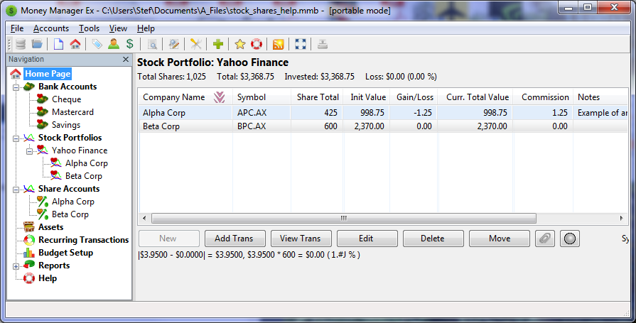

The terms Stocks and Shares generally mean the same thing but depending on how we use these terms, could mean something different. Here we refer to Stocks as companies, and Shares as units of value within the company. Generally we would obtain Stocks via a Stock Broker and purchase or sell shares in the company.
Initializing Stocks and Shares is initially a two stage process.
Any subsequent transactions involving Share movements is accessed via the company in the Stock Portfolio view.
Any transaction associated with our normal accounts is done via the Account View using the associated Shares Account.
In order to use Stocks and Shares in MMEX, we need to create an account of type: Investment.
The name for this account would generally be the name of the Stock
Broker. In our example we have selected the stock broker being called
Yahoo Finance
.
This account would appear in the Navigator under the heading Stock Portfolios. When we expand the Stock Portfolios branch in the Navigator, we would see our newly created Stock Portfolio account.
Selecting our new account Yahoo Finance
opens the view: Stock
Portfolio: Yahoo Finance. In this view we can now add the stocks that
we own.
We refer to Stocks as the companies that we have purchased shares.
Let us say that we purchase shares in two companies from out stock
broker Yahoo Finance
, we would create new entries in the stock
portfolio view for our companies.
As an initial entry for each company we would supply the following:
APCbeing the Stock Exchange code,
AXbeing the Stock Exchange to obtain current share value information

Saving this entry, the Share Account and Share Linkage can be set up.
Subsequent use of this dialog allows us to update the share price for this stock. When aditional shares have been purchased, this price will affect all shares.
Now that we have created the initial Stock entry, we need to Add a Transaction to our Stock to create the initial Shares entry. The initial share information is transferred to our new share transaction.
Here we would add extra information similar to a normal transaction.

Purchase or sale of shares is achieved by accessing the stock entry in the Stock Portfolio view and adding new transaction.
Here we need to add the share information and control the purchase or sale via the transaction section of the share entry:
Our Stock Portfolio Account now displays a summary of the Stocks we have.
Companies Alpha Corp and Beta Corp maintain their accounts with Yahoo Finance. Here we have hidden various headings as these become meaningless in this view.
Note: Initial share price is not listed in this view. This is because the share price becomes meaningless in a summary view as each purchase will generally have a different share price.
When we have added shares to our account we can see the associated share transactions using the View Transactions

A Share account contain the transactions that are associated with this company stock.
Initially we would set aside money for investment in Stocks and Shares. This is achieved by transferring money from our general accounts to a Share account.
As shares are purchased and dividends received, we can now keep track of our investment over time.
In a transactions, we can also use the company name as a Payee. It is also advisable to create categories of:
Stock list from Portfolio view for our stock:

Accessing our share account, we can add ordinary transactions to our shares account.